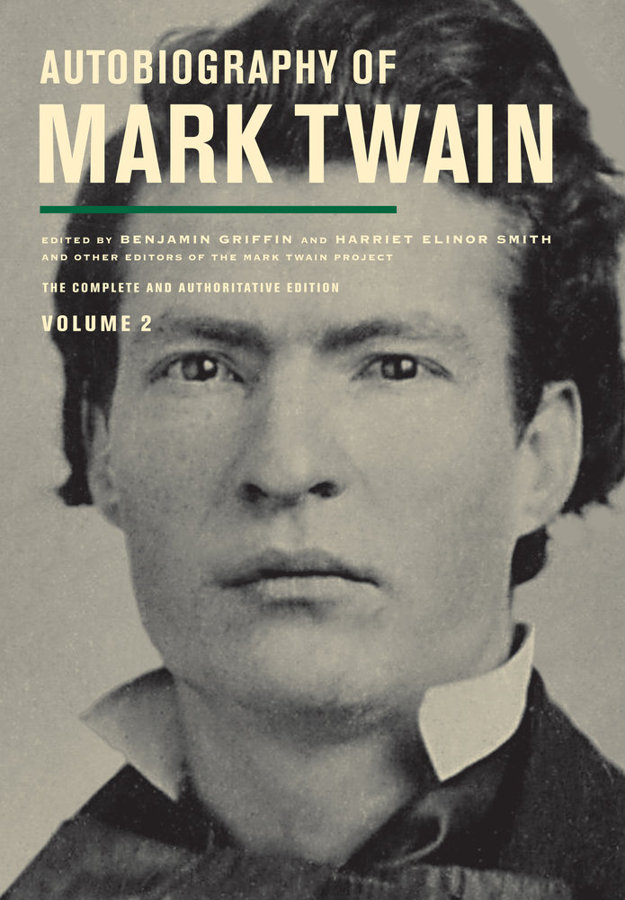
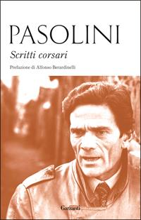
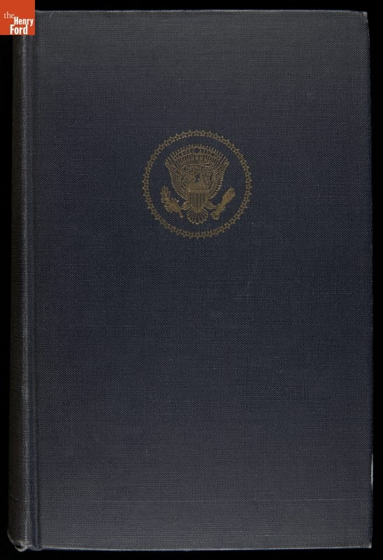
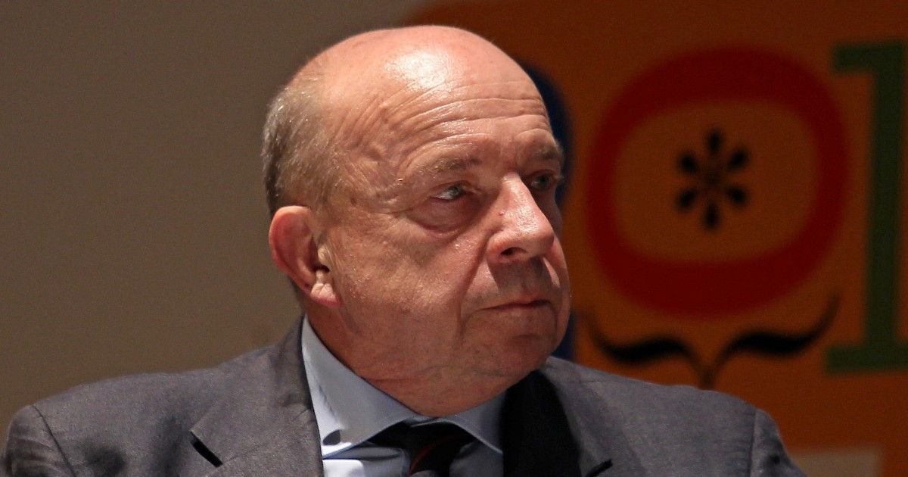

41:24 · 9 OPERE
Sentire comune e decisione politica.
Il filo del discorso
Il contributo interroga il rapporto fra decisione politica, giudizio individuale e possibilità di un sentire comune. Il relatore parte da Twain e dalla difficoltà di correggere una convinzione falsa, poi contrappone alla verità ridotta a preferenza soggettiva il confronto platonico con la percezione e con la ragione. La critica delle democrazie rappresentative conduce a una periodizzazione personale della storia repubblicana italiana, letta come progressiva crescita del potere oligarchico. Le vicende di Mattei, Pasolini e Moro sono evocate per denunciare una sfiducia verso le ricostruzioni ufficiali, senza che i diversi casi possano essere spiegati da un unico schema dimostrato. Al centro del discorso sta la capacità della comunicazione di organizzare percezioni e bisogni: il relatore esamina un manuale di giornalismo della DW Akademie e dell’IPSI tunisino e interpreta polemicamente la gerarchia di Maslow. Il libro di Sylvia Meagher sul rapporto Warren offre un esempio di critica documentale, mentre una intervista a Gustavo Zagrebelsky diventa occasione per contestare i provvedimenti pandemici. La scheda distingue il ragionamento politico del relatore dalla disciplina dei decreti-legge e dei DPCM e dalle conclusioni delle inchieste Kennedy. Il paragone finale fra internet e il filmato Zapruder sostiene l’invito a controllare le fonti; il valore di una testimonianza non elimina però la necessità di verificarne contenuto, limiti e interpretazioni.
I libri nel discorso

Autobiografia (Autobiography of Mark Twain)
Copertina del secondo volume dell’edizione critica: Immagine di riferimento: Autobiography of Mark Twain, Volume 2. The Complete and Authoritative Edition, University of California Press, 2013, 776 pagine, a cura di Benjamin Griffin e Harriet Elinor Smith con lo staff del Mark Twain Project, ISBN 9780520272781. La voce riguarda l’autobiografia; il secondo volume contiene la dettatura richiamata.
Copertina autentica vista integralmente: ritratto giovanile di Twain in bianco e nero, titolo giallo chiaro, linea verde e indicazione Volume 2. Copertina dell’edizione rilegata, ISBN 9780520272781. Nessuna attribuzione di questa edizione al relatore.
Autobiografia di Mark Twain esplicita. Il detto è riscontrato nella dettatura del 2 dicembre 1906; la forma virale moderna non è letterale.
Passaggio 0:12 ↗ · Fonti e libro ↗
Teeteto, o sulla scienza
Identificazione probabile
Copertina: Feltrinelli · 1994 · traduzione di Luca Antonelli, introduzione di Salvatore Natoli, saggio di Davide Spanio
Immagine autentica dell’opera, controllata visivamente; l’edizione di riferimento non è attribuita al filmato.
Discussione di Platone con la tesi protagorea e il miele percepito diversamente: identificazione probabile con il Teeteto, titolo non pronunciato.
Passaggio 3:21 ↗ · Fonti e libro ↗
Pensieri
Identificazione probabile
Copertina: UTET · a cura di Bruno Nacci · 2021
Copertina autentica dell’edizione di riferimento, non attribuita all’esemplare del video.
Le moi haïssable di Pascal riconoscibile nella trascrizione automatica; richiamo a Pensieri, titolo non pronunciato e numero non attribuito.
Passaggio 4:46 ↗ · Fonti e libro ↗
Dissoi logoi (Discorsi duplici)
Identificazione probabile
Copertina: Edizioni di Storia e Letteratura · 2018 · edizione critica a cura di Stefano Maso
Copertina editoriale autentica della monografia del 2018, collana Studi di storia della filosofia antica, n. 7. Il nome Stefano Maso indica l’autore dell’apparato critico e della traduzione; l’opera antica resta anonima.
Dissoi logoi pronunciato fra gli artifici della parola; resta ambiguo il confine fra titolo dell’opera anonima e formula generale dei discorsi duplici.
Passaggio 5:27 ↗ · Fonti e libro ↗
Cos’è questo golpe? Io so (Il romanzo delle stragi)
Identificazione probabile
Copertina della raccolta che contiene l’articolo: Articolo sul Corriere della Sera, 14 novembre 1974, pagina 3; raccolto in Scritti corsari come Il romanzo delle stragi. Immagine del contenitore: Garzanti, Elefanti bestseller, 19ª edizione 2015, 272 pagine, prefazione di Alfonso Berardinelli, ISBN 9788811688372. Il saggio non è un romanzo narrativo autonomo.
Copertina autentica della raccolta vista integralmente: Pasolini, Scritti corsari, fondo bianco e ritratto seppia, marchio Garzanti in basso. Il singolo articolo è distinto bibliograficamente dal volume che lo contiene.
Articolo di Pasolini sul sapere i responsabili delle stragi senza avere le carte in mano; identificazione probabile con Cos’è questo golpe? Io so / Il romanzo delle stragi.
Passaggio 26:25 ↗ · Fonti e libro ↗
Report of the President’s Commission on the Assassination of President John F. Kennedy
Copertina: Government Printing Office, Washington, 1964. Fotografia della legatura originale blu scuro con sigillo dorato, esemplare The Henry Ford 2013.51.1, immagine THF230053, dono di Kathleen Glynn Seymour. Il titolo è registrato sul dorso nella scheda museale, non stampato sul piatto anteriore visibile. Il rapporto fu presentato il 24 settembre 1964; i 26 volumi di testimonianze e prove furono pubblicati il 23 novembre. La fotografia non rappresenta l’intera serie.
Fotografia museale del piatto anteriore dell’esemplare 1964; sigillo visibile, titolo sul dorso riscontrato nel catalogo. Nessuna attribuzione dell’esemplare al video.
Rapporto della Commissione Warren esplicito, distinto dal saggio critico di Meagher.
Passaggio 28:31 ↗ · Fonti e libro ↗Accessories After the Fact. The Warren Commission, the Authorities & the Report on the JFK Assassination
Copertina: Skyhorse Publishing, 3 settembre 2013, 512 pagine, ISBN 9781620879979. Prima edizione 1967. Prefazione di Richard S. Schweiker e introduzione di Peter Dale Scott: contributori distinti dall’autrice Sylvia Meagher.
Copertina autentica Skyhorse vista integralmente: fondo bianco, titolo rosso, fasce blu, sottotitolo e Sylvia Meagher in nero, contributi di Schweiker e Scott indicati in basso. Non è la copertina della prima edizione del 1967.
Sylvia Meagher, anno 1967 e titolo Accessories After the Fact con sottotitolo espliciti.
Passaggio 28:45 ↗ · Fonti e libro ↗
Coronavirus e decreti, Zagrebelsky: «Chi dice Costituzione violata non sa di cosa sta parlando»
Fotografia pubblicata con l’intervista: Il Fatto Quotidiano, 1 maggio 2020, aggiornamento del 2 maggio 2020. Intervista di Silvia Truzzi a Gustavo Zagrebelsky. Nessun ISBN; immagine fotografica associata all’articolo, non copertina di un libro o prima pagina del giornale.
Fotografia autentica vista integralmente nella versione pubblicata dal quotidiano: ritratto di Gustavo Zagrebelsky in giacca e cravatta, formato orizzontale 1200 × 630. È l’immagine associata all’intervista nella pagina originale; non contiene il titolo stampato e non viene descritta come copertina libraria.
Titolo e brani dell’intervista a Gustavo Zagrebelsky riconosciuti nel testo originale di Silvia Truzzi del 1 maggio 2020.
Passaggio 31:03 ↗ · Fonti e libro ↗
Costituzione della Repubblica Italiana
Copertina dell’edizione Intra aggiornata al 2023: Intra · 2023 · introduzione di Umberto Vincenti
Copertina autentica del testo integrale, aggiornata alla legge costituzionale 26 settembre 2023 n.1. È successiva al filmato del 2019 e non rappresenta la versione storica letta dal relatore. Umberto Vincenti firma l’introduzione.
Costituzione italiana e necessità e urgenza esplicite; l’articolo 77 è localizzazione redazionale, non numero pronunciato.
Passaggio 31:19 ↗ · Fonti e libro ↗